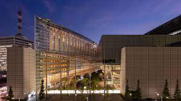
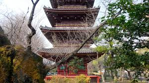
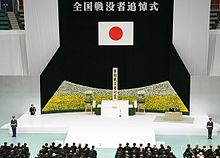

TOKYO BUITIN SITES

Roppongi Hills Mori Tower
Roppongi Hills
Is a 54-story mixed-use skyscraper in Roppongi, Minato, Tokyo. Completed in 2003 and named after builder Minoru Mori

Tokyo International Forum Co
7:00am to 11:30pm
Tokyo International Forum is a vast convention center, concert venue and exhibition space close to Tokyo.

Shōfuku-ji (Higashimurayama)
Opening hours 24hors
Its early 15th century Jizō hall is a registered National Treasure of Japan.

Tokyo War Dead Memorial
Rekisen Park
The National Memorial Service for War Dead is an official, secular ceremony conducted annually on August 15.